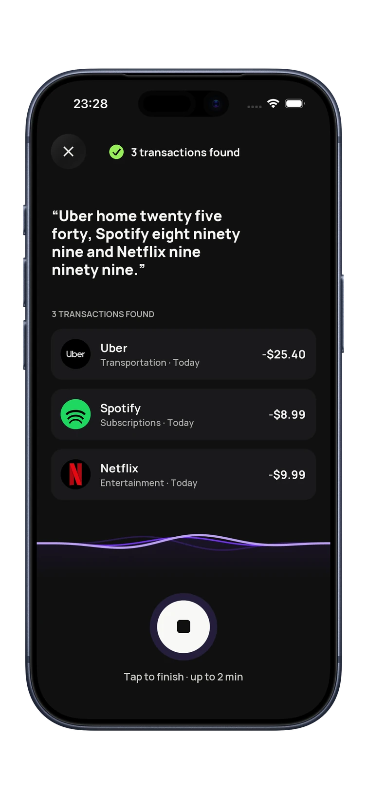
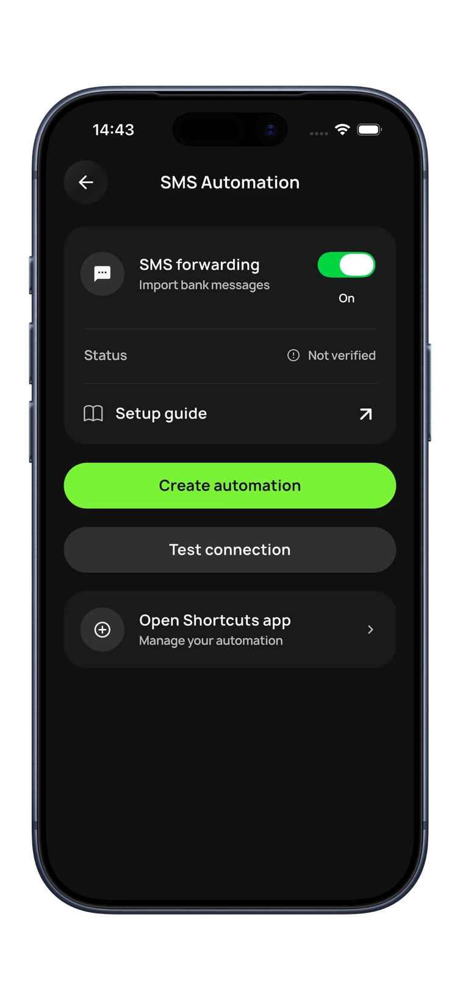
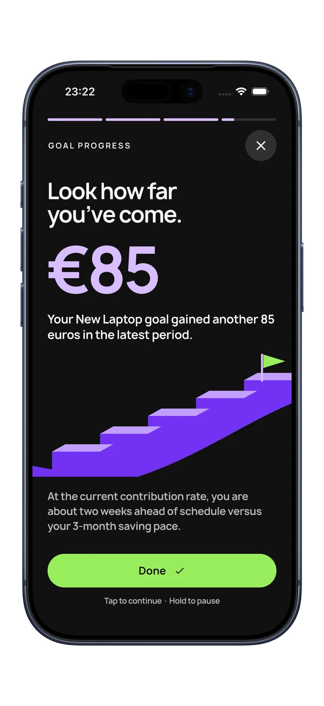
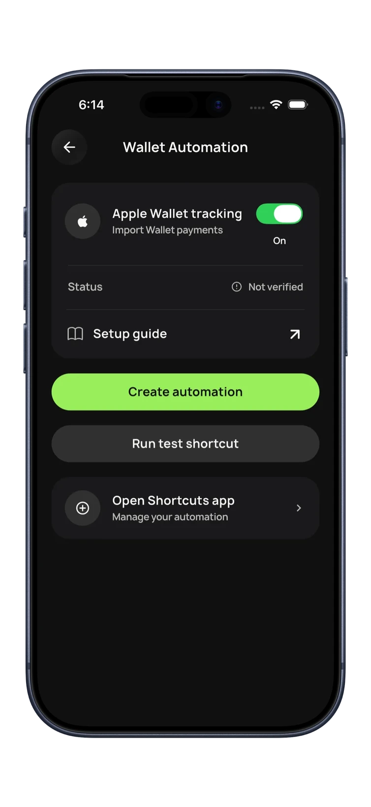
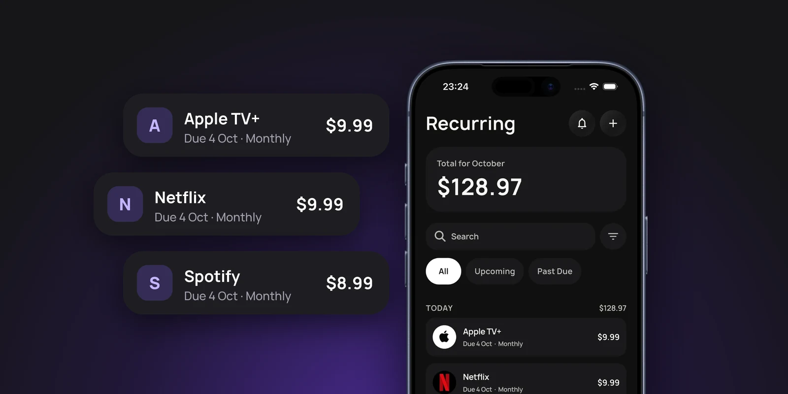
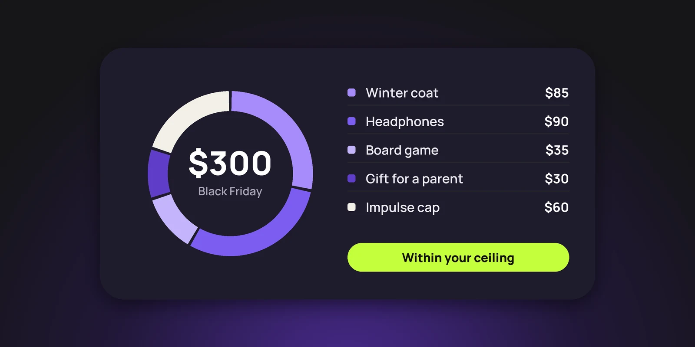

Zero-Based Budgeting, Explained (With a Monthly Example)
Zero-based budgeting explained step by step: how to give every dollar of take-home pay a job, a full $4,200 monthly example, how to handle irregular income, and how to run it in BudgetGo.
BudgetGo blog
Practical guides on budgeting, tracking your spending, and getting the most out of BudgetGo.
Zero-based budgeting explained step by step: how to give every dollar of take-home pay a job, a full $4,200 monthly example, how to handle irregular income, and how to run it in BudgetGo.

Voice, Apple Pay, bank SMS alerts, Apple Wallet, connected banks, statement imports and manual entry: every way to add spending to BudgetGo, and the best setup for you.

Voice expense tracking lets you log a purchase by saying it out loud. Here's how it works, what to say, when it beats automatic tracking, and how to make it a 10-second habit.

How to track spending from bank SMS alerts automatically: set up an Apple Shortcuts Message automation, keep it limited to your bank, and fix it when an alert doesn't log.

How to track spending by merchant to see where your money really goes: a worked monthly example, the five kinds of merchants to look for, the visit-times-average math, and how to act on what you find.
What "safe to spend" means, how a spending forecast works (with the math), and how BudgetGo's Forecast and Safe to Spend help you stay on track for the rest of the month.

How to stop impulse spending without cutting out every treat: find your triggers, add a pause before you buy, give yourself a planned fun-money cap, and track it so the holiday sales don't take over.

How to import a bank statement into a budget app step by step: download the right file from your bank, choose PDF, CSV or Excel, avoid duplicates, and check the results.
How to stop overspending without guessing: measure your monthly gap, find the two categories causing it, set a weekly cap, and keep credit cards from hiding the overspend until the bill arrives.
How to save money on your heating bill this winter: estimate your monthly heating cost, make the cheap fixes that matter, and plan the winter months in your budget so a cold snap doesn't wreck it.

How to save money for Christmas with about six weeks to go: set a target, split it across your remaining paychecks, find the cash in your own spending, and start next year's Christmas fund in January.
How to make a budget from scratch in 5 steps: find your take-home pay, list what you really spend, do the math, set savings targets, and adjust after month one. Includes a full $3,800 example.
How to avoid holiday debt in 2026: find the cash you'll actually have by December 31, close the gap before you shop, use buy now, pay later safely, and track every purchase so January starts clean.

How much to spend on groceries per month, worked out from your own numbers: track three months, set a weekly cap, split it into a weekly shop and a stock-up, and watch your pace so food costs stop drifting.

How much to spend on eating out per month, worked out from your own numbers: check what you spend now, compare it with US averages, set a monthly number and a per-meal limit, and track it so it stops creeping up.

BudgetGo turns your transactions into short, tappable insight stories: pacing, saving opportunities, overspending, hidden habits and period comparisons. Here's how they work.

How BudgetGo uses AI to categorize every transaction automatically, from bank feeds, Apple Pay, SMS alerts and statements, and how you can review or change any category.
A holiday tipping guide that starts with your budget: who to tip, how much to give your mail carrier, cleaner, teacher and others, and a worked example that adds it all up.
How to make a holiday budget in 6 steps: list every cost, set a total you can pay without debt, split it by category, and track it. Includes a worked example with the math.
A 5-minute end-of-month budget review: close out the month, check one number, find the categories that drifted, work out why, and make one change for next month. With a worked example.
Personal cash flow explained simply: the money in minus money out formula, a worked monthly example, what positive and negative cash flow mean, the counting mistakes to avoid, and how to improve yours.

Are budgeting apps safe to use with AI? What happens to your spending data in BudgetGo: what the AI sees, who processes it, what we never do with it, and the privacy controls you keep.
Should you set a budget or just track your spending? The difference between budgeting and expense tracking, when tracking alone is enough, when you need a budget, and how to move from one to the other.
How to do a no-spend challenge that lasts: set the rules, decide what counts as essential, work out what you'll save with real math, track every day, and plan the day after.

How to track Apple Pay spending automatically with an Apple Shortcuts automation: set it up in about two minutes, see what gets captured, and fix it when a payment doesn't show up.
How much Thanksgiving dinner costs in 2026, and how to set your own budget per person: a worked example for 10 guests, ways to trim the bill, and how to track it before Thursday, November 26.

How to track subscriptions and recurring bills automatically: how BudgetGo spots repeating charges, lines up what's due this week, and helps you plan before the money leaves.

How much to spend on Black Friday, worked out from your own numbers: set a ceiling, build a ranked list, cap impulse buys, and track every deal so the sales don't wreck your December.
How much to spend on Christmas gifts, worked out from your own numbers: set a total you can afford, split it per person and per child, and track it so December doesn't spill into January.
A simple 4-step system to track your spending automatically, sort it into categories, and spot where your money goes, no spreadsheet needed.
A quick subscription audit: how to find every recurring charge, check App Store subscriptions, decide what to cancel, and stop surprise renewals.

What the 50/30/20 budget rule is, how to split your take-home pay into needs, wants, and savings, and how to adjust it when rent is high.